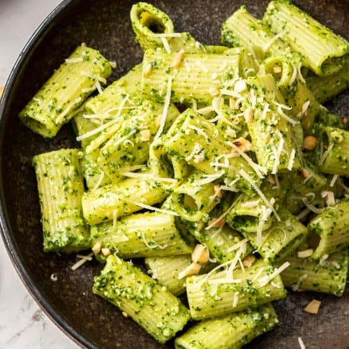

Rigatoni al Pesto

Description
One of my favorite Italian pasta dishes, ideal for any time of the year.
For the rigatoni themselves, just follow the instructions on the package, and take them out of the water 1 minute before of what it is indicated.
Ingredients
- 1 pack of Rigatoni pasta
- 1 whole branch of fresh basil
- 100 gr of cashews
- 100 gr of Parmigiano Reggiano
- 1 lemon juice
- 1 tablespoon of olive oil
- 2 cloves of garlic
Steps
- Start cooking your pasta and chop the garlic for easier mix.
- Put the basil, the cashews, the parmesan cheese, the lemon, the garlic and the oil on a blender or mortar.
- Blend until all the ingredients are integrated, taste if it needs more lemon or cheese.
- Add the pasta to a pan when ready, and add the fresh pesto with a big spoon of pasta water, as much as you want until reaching a sort of creaminess.
- Serve and add salt and pepper to taste.
- Scatter some extra cashews and parmesan for added flavor.